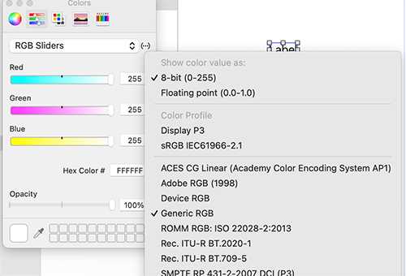
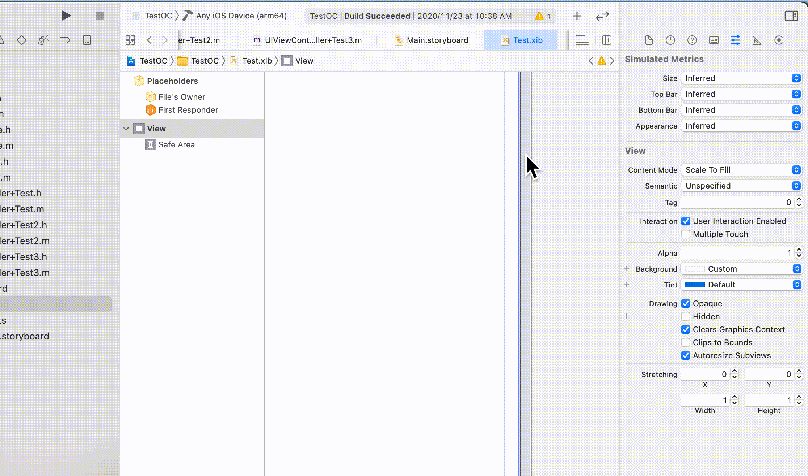
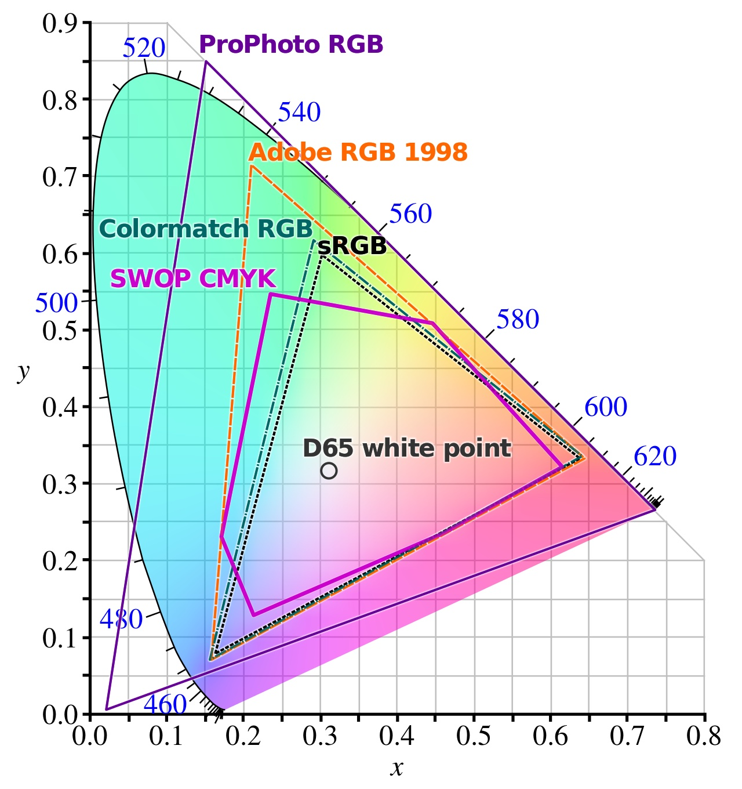
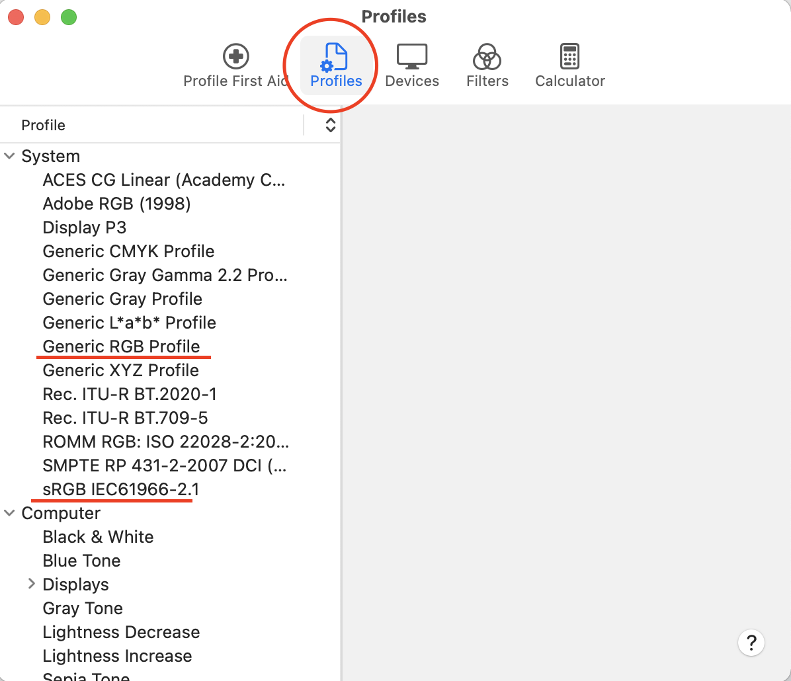

iOS开发xib和代码设置颜色不同的解决方法及其原理（深度好文）
本文主要包括两部分，其一是解决xib设置颜色有偏差的问题，其二是聊一下颜色的一些基础知识。
到公众号【iOS开发栈】学习更多SwiftUI、iOS开发相关内容。回复“博客”免费获取各大互联网公司面试题。
xib和代码设置颜色有偏差的原因
在开发iOS app的过程中我们都是按照设计同学给出的标注来做的，而UI同学在作图时使用到的工具就会有“颜色配置文件（Color Profile）”。（下面有颜色配置文件的说明）

从上图可以看出，ps默认的颜色配置文件是sRGB，因此设计给我们的图都是以sRGB为准的。
但是在Xcode的ib相关文件中设置颜色时，默认的颜色配置文件是Generic RGB的。

因此，如果我们直接按照sRGB标的色值在Generic RGB的配置下进行设置就会出现色差了。
通过下面的GIF可以更直观的看到这种差异

而代码设置颜色时默认是采用的和photoshop一样的sRGB，也是和xib的Generic RGB不相同的，所以代码设置的颜色和UI同学提供的是一样的，而xib中是和他们两个不一样的。
xib设置颜色和代码有差异的问题解决方案
解决方案有两种，一种是把sRGB的色值转化成Generic RGB之后再进行设置，另一种是把配置改成sRGB的再进行设置。
这里用到的不同颜色配置之间进行转换的工具可以用mac自带的ColorSync Utility
xib和代码设置的颜色有差异的原理分析
上面说到了xib默认的颜色配置和ps、代码都是不同的，说到颜色配置（Color Profile）就不得不说颜色模型（Color Model）和颜色空间（Color Space）。
众所周知，计算机、摄像机、打印机等数字设备中只能认识0和1（不然它们也不会叫数字设备了🐶），因此为了把自然界中的五颜六色在数字设备中展示出来，颜色转换成数字的算法（公式）—— 颜色模型 就出现了。
现在被广泛使用的颜色模型有RGB、CMYK、CIELAB等，其中RGB主要用在摄像机、显示器等领域，CMYK主要用在打印机领域，具体内容可以查看这篇文章
有了算法，就要有颜色模型具体的算法实现——颜色空间。之所以叫空间是因为每一个具体的颜色空间都有一个范围

正如上图所示，颜色空间都是有不同的范围的，而不同范围的颜色空间进行转换的时候就会有损失，也就会造成色差。
颜色模型可以理解为一个概念、理论，颜色空间是对颜色模型的一次具象描述，但是它还不能被计算机所理解。颜色配置正是能够直接被数字设备拿来用的具体文件。
在Mac电脑的ColorSync Utility应用中可以看到下面这些颜色配置

到公众号【iOS开发栈】学习更多SwiftUI、iOS开发相关内容。回复“博客”免费获取各大互联网公司面试题。
至此，我们把xib和代码设置颜色有偏差的现象彻底解决了，总结一句话就是：
不同的颜色配置之间转换时会造成色差，而代码和xib进行颜色设置时使用了不同的颜色配置文件，才最终导致了同样的色值的最终表现不同。